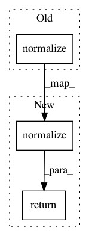

08a15818639d1ab5834a93bdf7dd14b177dcc83e,vis/visualization/saliency.py,,visualize_cam_with_losses,#,131
Before Change
heatmap = zoom(heatmap, zoom_factor)
// Normalize and create heatmap.
heatmap = utils.normalize(heatmap)
return np.uint8(cm.jet(heatmap)[..., :3] * 255)
def visualize_cam(model, layer_idx, filter_indices,
After Change
// Figure out the zoom factor.
zoom_factor = [i / (j * 1.0) for i, j in iter(zip(input_dims, output_dims))]
heatmap = zoom(heatmap, zoom_factor)
return utils.normalize(heatmap)
def visualize_cam(model, layer_idx, filter_indices,
seed_input, penultimate_layer_idx=None,
In pattern: SUPERPATTERN
Frequency: 3
Non-data size: 3
Instances
Project Name: raghakot/keras-vis
Commit Name: 08a15818639d1ab5834a93bdf7dd14b177dcc83e
Time: 2017-08-23
Author: ragha@outlook.com
File Name: vis/visualization/saliency.py
Class Name:
Method Name: visualize_cam_with_losses
Project Name: raghakot/keras-vis
Commit Name: 08a15818639d1ab5834a93bdf7dd14b177dcc83e
Time: 2017-08-23
Author: ragha@outlook.com
File Name: vis/visualization/saliency.py
Class Name:
Method Name: visualize_saliency_with_losses
Project Name: catalyst-team/catalyst
Commit Name: 8218e76ef1d7978fefceec1d04ce8aed71c2d0d1
Time: 2020-12-30
Author: dimdoroshenko@gmail.com
File Name: catalyst/contrib/nn/modules/arcface.py
Class Name: SubCenterArcFace
Method Name: forward